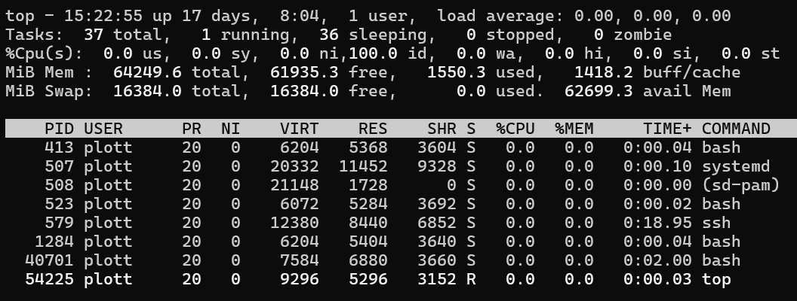

Your computer's resources are limited. If you run out of memory or storage, your computer won't work properly. On your desktop/laptop, we typically don't worry about running a program on your computer because the files and applications are typically very small. However, many Next Generation Sequencing datasets are large and will strain a computer's resources.
For example, a typical laptop/desktop may have 4 CPU cores, 16GB RAM memory, and 1TB storage. To process a single whole exome DNA-seq Tumor/Normal sample, will require 16 CPU cores, 64GB memory, and 50-100GB Storage. When running 32 samples, you'd need 512 CPU cores, 2TB Ram memory, and 3.2 TB Storage to run at the same time.
If we tried to run the analysis on a computer that doesn't have enough resources, at best it'll fail or crash the computer and at worst process very, very slowly.
In bioinformatics, it's not uncommon to open and process files that are >10GB. If we tried to open such a file in Excel or Word, your computers would crash.
| Command | Description |
|---|---|
| ps | Display your current active processes |
| ps aux | Display everyone's processes |
| kill <pid> | Kill process by <process id> number |
| fg | Bring the most recent job to the foreground |
| bg | Lists stopped or background jobs |
| nohup <command> & | Run command in background and keeps running even if you log off. |
ps : Listing Your ProcessesTo list all of you processes.
$ ps PID TTY TIME CMD 422587 pts/7 00:01:08 bash 1688158 pts/7 00:00:00 ps
$ ps
PID TTY TIME CMD
422587 pts/7 00:01:08 bash
1688158 pts/7 00:00:00 psYou'll nice there are 4 columns:
ps aux : Listing All ProcessesThis will list all the processes on your computer. It lists both the system processes and all the process that everyone else is running. Since the list can be rather long, it may be better to use top
kill: Stopping a processIt's not uncommon to make a mistake with a command and find that it's either using too many resources or is going to run forever. In some cases, it may even be unresponsive to CTRL+c terminate process shortcut. In all cases, the best thing to do is to kill the process.
To practice starting and killing a process, we're going to revisit some commands we used in Lesson 1.
sleep <number>: Puts the terminal to sleep (ie pauses for set number of seconds)
CTRL+z : Suspend or Pause a process
bg: Run the process in the background
$ sleep 1000
# Press CTRL+z
$ bg # Move Process to background running
$ ps
PID TTY TIME CMD
1038624 pts/5 00:00:00 bash
1040052 pts/5 00:00:00 sleep
1040366 pts/5 00:00:00 ps
$ kill 1040052
[1] + 1040052 terminated sleep 1000
$ ps
PID TTY TIME CMD
1038624 pts/5 00:00:00 bash
1041425 pts/5 00:00:00 ps$ sleep 1000
# Press CTRL+z
$ bg # Move Process to background running
$ ps
PID TTY TIME CMD
1038624 pts/5 00:00:00 bash
1040052 pts/5 00:00:00 sleep
1040366 pts/5 00:00:00 ps
$ kill 1040052
[1] + 1040052 terminated sleep 1000
$ ps
PID TTY TIME CMD
1038624 pts/5 00:00:00 bash
1041425 pts/5 00:00:00 psnohup: No Hang UPnohup <command> keeps a command running even if you exit your terminal. If you have a command running in your terminal and close it, typically it is attached to the terminal and when you close the terminal it'll receive a HANG UP message that will kill the process even if it's not completed.
nohup detaches a command from the terminal - so that it'll keep running regardless of the state of the terminal.
$ nohup sleep 12345 nohup: ignoring input and appending output to 'nohup.out' # Close the Terminal # Start a new terminal $ ps x PID TTY STAT TIME COMMAND 1049980 ? S 0:00 sleep 12345 $ kill 1049980
$ nohup sleep 12345
nohup: ignoring input and appending output to 'nohup.out'
# Close the Terminal
# Start a new terminal
$ ps x
PID TTY STAT TIME COMMAND
1049980 ? S 0:00 sleep 12345
$ kill 1049980 Combining nohup and & detaches the process and runs it in the background. This is the typical way of using nohup as it allows you to run multiple commands without waiting for access to get back to the terminal.
$ nohup sleep 12345 & nohup: ignoring input and appending output to 'nohup.out' $ nohup sleep 12346 & nohup: ignoring input and appending output to 'nohup.out' $ nohup sleep 12347 & nohup: ignoring input and appending output to 'nohup.out' $ ps x PID TTY STAT TIME COMMAND 1049980 ? S 0:00 sleep 12345 1049981 ? S 0:00 sleep 12346 1049982 ? S 0:00 sleep 12347 $ kill 1049980 1049981 1049982
$ nohup sleep 12345 &
nohup: ignoring input and appending output to 'nohup.out'
$ nohup sleep 12346 &
nohup: ignoring input and appending output to 'nohup.out'
$ nohup sleep 12347 &
nohup: ignoring input and appending output to 'nohup.out'
$ ps x
PID TTY STAT TIME COMMAND
1049980 ? S 0:00 sleep 12345
1049981 ? S 0:00 sleep 12346
1049982 ? S 0:00 sleep 12347
$ kill 1049980 1049981 1049982| Command | Description |
|---|---|
| top | Continuously display system statistics |
| free -h | Displays amount of free and used memory in the system |
| df -h | Report file system space usage |
| du -skh | Estimate file storage usage |
| lscpu | List CPU Information |
| lsblk | List Bulk Storage Drives |
top: Interactive System Monitortop allows you to see all the processes that are running and filter them by user, memory, cpu usage, ...
$ top
$ top
To exit top, type q
To select a different user, type u and then type the username and enter
free -h : List amounts for Free and Used Memory$ free -h
total used free shared buff/cache available
Mem: 377Gi 59Gi 23Gi 8.6Gi 295Gi 307Gi
Swap: 63Gi 27Mi 63Gi
$ free -h
total used free shared buff/cache available
Mem: 377Gi 59Gi 23Gi 8.6Gi 295Gi 307Gi
Swap: 63Gi 27Mi 63Gi
To see how much free disk space you have: df -h
To get an estimate of how much disk space a folder(s) is taking: du -skh
To see the list of drives on your computer: lsblk
$ df -h Filesystem Size Used Avail Use% Mounted on tmpfs 38G 4.4M 38G 1% /run /dev/sdc2 916G 811G 59G 94% / tmpfs 189G 551M 189G 1% /dev/shm tmpfs 5.0M 4.0K 5.0M 1% /run/lock tmpfs 189G 0 189G 0% /run/qemu /dev/sdb1 458G 65G 370G 15% /home/plott/OldHome /dev/sdc1 511M 6.1M 505M 2% /boot/efi $ du -skh 129M . $ du -skh * 1.1M Books 1.4M Data 86M Datasets 60K Documents 4.0K error.log 188K Private 40M Reference 4.0K Temporary $ lsblk NAME MAJ:MIN RM SIZE RO TYPE MOUNTPOINTS sda 8:0 0 3.6T 0 disk /data sdb 8:16 0 465.8G 0 disk └─sdb1 8:17 0 465.8G 0 part /home/plott/OldHome sdc 8:32 0 931.5G 0 disk ├─sdc1 8:33 0 512M 0 part /boot/efi └─sdc2 8:34 0 931G 0 part /
$ df -h
Filesystem Size Used Avail Use% Mounted on
tmpfs 38G 4.4M 38G 1% /run
/dev/sdc2 916G 811G 59G 94% /
tmpfs 189G 551M 189G 1% /dev/shm
tmpfs 5.0M 4.0K 5.0M 1% /run/lock
tmpfs 189G 0 189G 0% /run/qemu
/dev/sdb1 458G 65G 370G 15% /home/plott/OldHome
/dev/sdc1 511M 6.1M 505M 2% /boot/efi
$ du -skh
129M .
$ du -skh *
1.1M Books
1.4M Data
86M Datasets
60K Documents
4.0K error.log
188K Private
40M Reference
4.0K Temporary
$ lsblk
NAME MAJ:MIN RM SIZE RO TYPE MOUNTPOINTS
sda 8:0 0 3.6T 0 disk /data
sdb 8:16 0 465.8G 0 disk
└─sdb1 8:17 0 465.8G 0 part /home/plott/OldHome
sdc 8:32 0 931.5G 0 disk
├─sdc1 8:33 0 512M 0 part /boot/efi
└─sdc2 8:34 0 931G 0 part /
To see information about your CPU: lscpu
To see information about your Hardware: lshw
$ lscpu
Architecture: x86_64
CPU op-mode(s): 32-bit, 64-bit
Address sizes: 46 bits physical, 48 bits virtual
Byte Order: Little Endian
CPU(s): 32
On-line CPU(s) list: 0-31
Vendor ID: GenuineIntel
Model name: Intel(R) Xeon(R) CPU E5-2670 0 @ 2.60GHz
$ lshw
laelaps
description: Computer
width: 64 bits
capabilities: smp vsyscall32
*-core
description: Motherboard
physical id: 0
*-memory
description: System memory
physical id: 0
size: 386GiB
*-cpu:0
product: Intel(R) Xeon(R) CPU E5-2670 0 @ 2.60GHz
vendor: Intel Corp.
physical id: 4
bus info: cpu@0
version: 6.45.7
size: 1973MHz
capacity: 3300MHz
width: 64 bits$ lscpu
Architecture: x86_64
CPU op-mode(s): 32-bit, 64-bit
Address sizes: 46 bits physical, 48 bits virtual
Byte Order: Little Endian
CPU(s): 32
On-line CPU(s) list: 0-31
Vendor ID: GenuineIntel
Model name: Intel(R) Xeon(R) CPU E5-2670 0 @ 2.60GHz
$ lshw
laelaps
description: Computer
width: 64 bits
capabilities: smp vsyscall32
*-core
description: Motherboard
physical id: 0
*-memory
description: System memory
physical id: 0
size: 386GiB
*-cpu:0
product: Intel(R) Xeon(R) CPU E5-2670 0 @ 2.60GHz
vendor: Intel Corp.
physical id: 4
bus info: cpu@0
version: 6.45.7
size: 1973MHz
capacity: 3300MHz
width: 64 bits